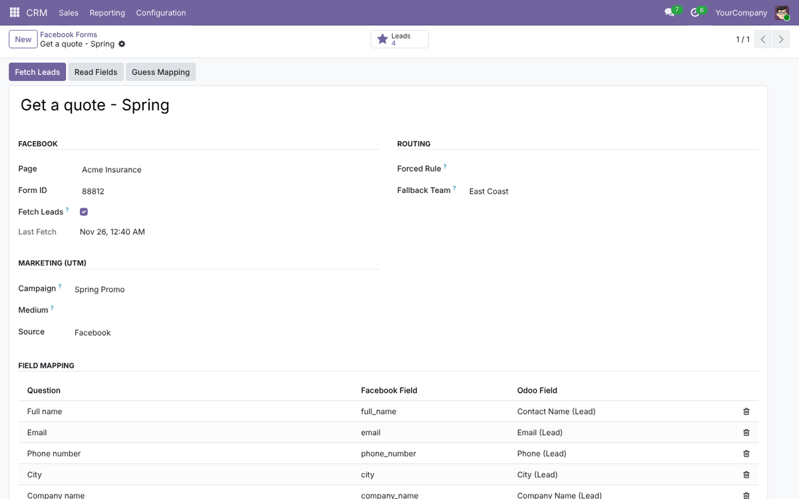
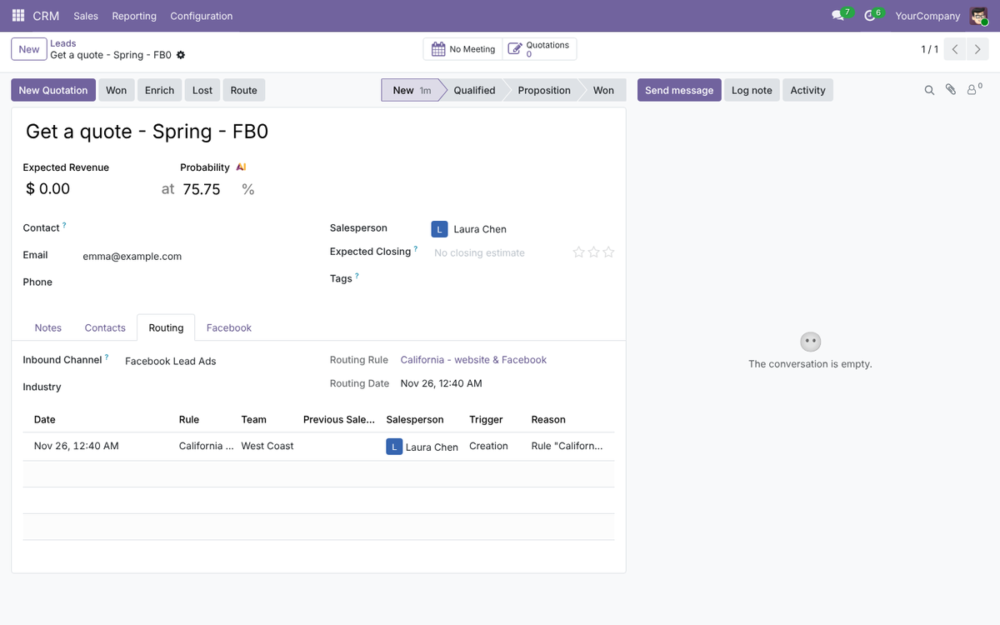

Facebook Lead Ads Sync
Import the leads of your Facebook Lead Ads forms into Odoo CRM and route them automatically
with Smart Lead Routing.
Pages and forms
Import the pages managed by your Facebook user and their active lead forms, then choose which
forms are downloaded by the hourly scheduled action.
Field mapping
Map each form question to a lead field (text, number, date, selection, many2one, country and
state by code). Unmapped answers are kept in the lead notes.
Routing
Leads get the "Facebook Lead Ads" inbound channel. Routing rules can filter by form, and each
form can force a rule or define a fallback team.
Form configuration
Fetch the form questions, review the proposed mapping, set the UTM campaign, source and medium, and decide
how its leads are routed. If campaign or medium are empty, the Facebook campaign and ad are used.

Leads with full traceability
Each lead keeps its Facebook lead ID, page, form, campaign, ad set and ad, and the routing history shows
which rule assigned it.

Setup
- Create an App on developers.facebook.com and get the Lead Ads permissions approved in App Review
(leads_retrieval, pages_show_list, pages_manage_ads, pages_read_engagement, ads_management).
- In CRM > Configuration > Settings > Facebook Lead Ads, enter the App ID and App Secret
and click Get Access Token. Add your Odoo URL followed by
/crm_lead_routing_facebook/auth
as a valid OAuth redirect URI in the App.
- Click Import Pages, then Import Forms on each page.
- Enable Fetch Leads on the forms to synchronize and create routing rules.

External service and data
This module connects to the Meta Graph API (graph.facebook.com) only after an administrator enters the App
credentials in Settings. It sends the App and page access tokens to Meta and receives your pages, forms
and leads. Tokens are stored in your database and are only visible to administrators. No data is sent to
any other party. The Graph API version is configurable (v26.0 by default).
Requires the Smart Lead Routing module (crm_lead_routing). Works on Odoo 19 Community and Enterprise.
Spanish translation included.
Based on the crm_facebook_leads module by BADEP and Vauxoo (AGPL-3), rewritten for
Odoo 19. Licensed under AGPL-3.